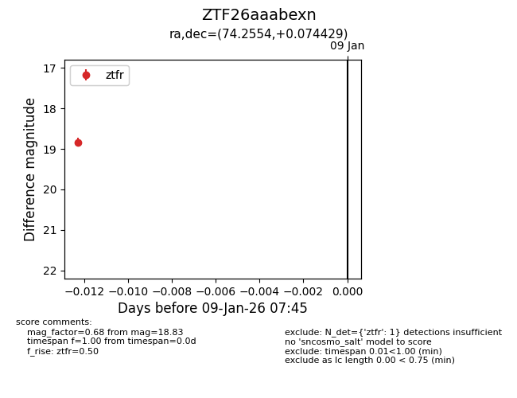
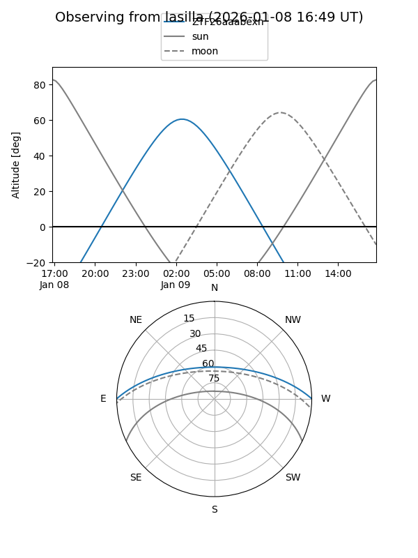
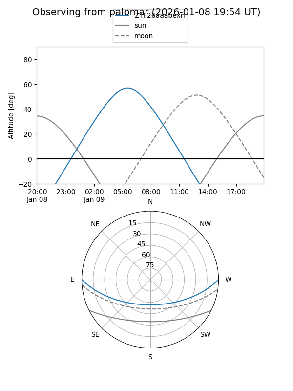

ZTF26aaabexn
Target ZTF26aaabexn at 2026-01-09 07:45
Aliases and brokers:
FINK:
Lasair:
ALeRCE:
alt names
ZTF26aaabexn (ztf,fink_ztf)
Coordinates:
equatorial (ra, dec) = 74.2554,+0.07443
equatorial (HMS+DMS) = 04:57:01.30,+00:04:27.94
galactic (l, b) = (198.8973,-25.18185)
Flags:
Photometry:
last ztfr=18.83
1 ztfr detections
Lightcurve

Visibility


Additional plots